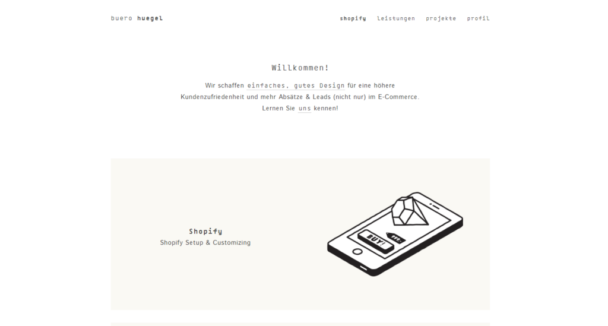
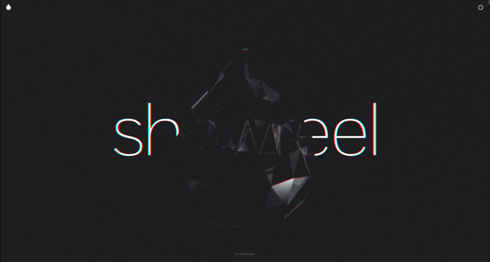
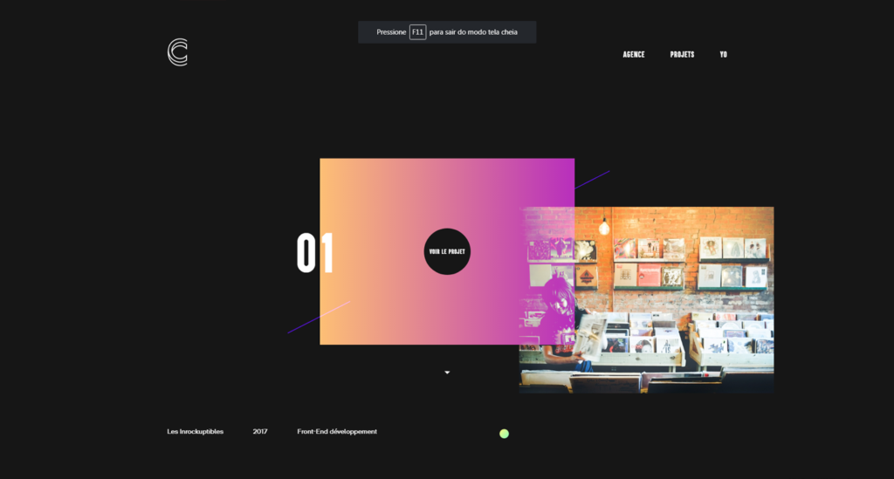
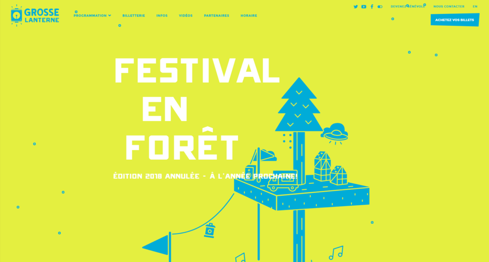
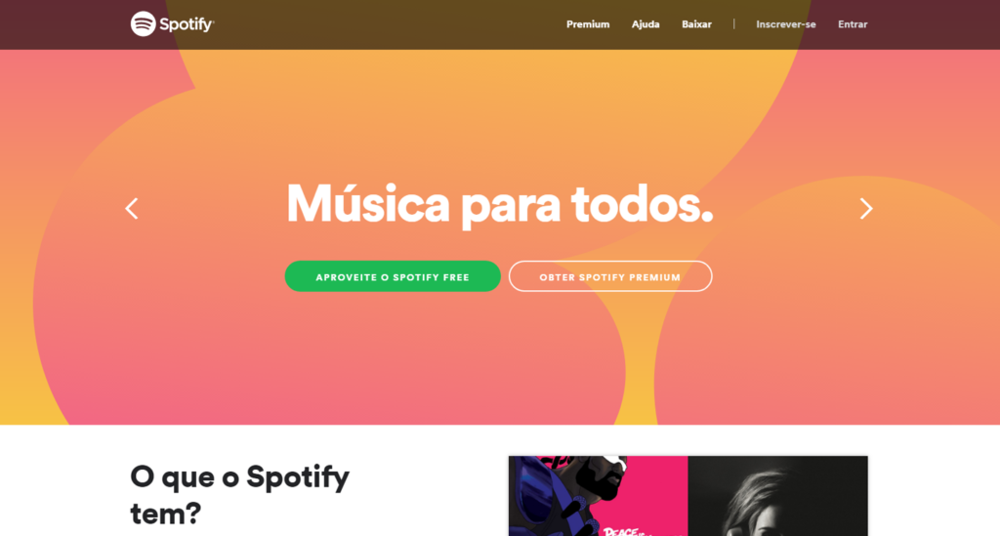
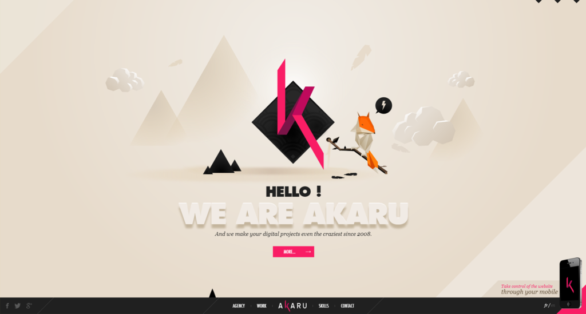

Criação de sites
Todos os websites desenvolvidos estão equipados com um robusto painel administrativo, muito completo e de fácil gestão. Neste painel pode analisar as estatísticas dos seus visitantes, criar páginas e artigos, adicionar novas imagens, responder a pedidos de contactos, entre outras mais opções.
|  |  |  |
Estética minalistica
Pensando em oferecer um visual único, nós colocamos no ar uma página que trabalha estética minimalista. No entanto, ela ainda conta com layout fino e assimétrico. Tudo isso foi pensado para fazer com que o visitante obtenha um visual completamente diferente daqueles com que ele está acostumado.
CSS,3D e JavaScript
Uma segunda opção que se enquadra na lista de sites modernos é esta página classificada como leve mesmo fazendo uso de CSS mais tecnologias 3D junto ao canvas e Javascript. Isso só foi possível, porque houve uma otimização de código de forma intensa.
Estilo assímetrico
O estilo assimétrico também está presente nos sites modernos. Esta página tem muito em comum com a do Spotify. Porém, ela é extremamente agradável de ser vista, pois, o projeto foi executado de uma maneira impecável.
|  |  |  |
Grosse Lanterne
Outro que se enquadra quando o assunto são os sites modernos é o Grosse Lanterne. Essa página oferece animações de forma suave que aparecem conforme o internauta troca de página.Esse recurso faz com a página fique dinâmica dentro das características visuais dela.
Estudio Digital
A simplicidade não só pode como deve estar presente durante a construção dos sites modernos. Esse estúdio digital conta com animações que serviram para dar naturalidade a página.
Estudio Digital
simplicidade não só pode como deve estar presente durante a construção dos sites modernos. Este estúdio digital conta com animações que serviram para dar naturalidade a página.